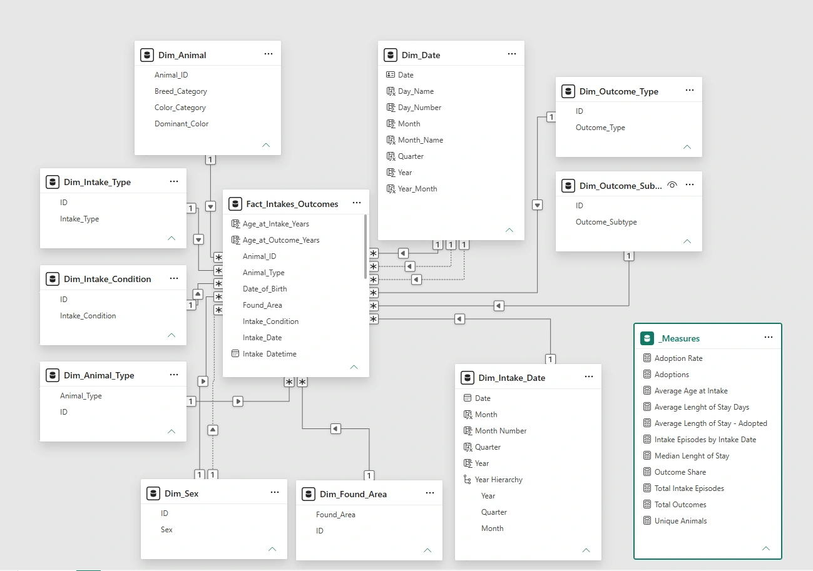

Animal Shelter | Adoption Analysis
Analiza przyjęć, adopcji, wyników i długości pobytu zwierząt w schronisku Austin Animal Services.
Analysis of intakes, adoptions, outcomes and length of stay at Austin Animal Services.
Najważniejsze liczby
Key figures
Galeria raportu
Report gallery
Wybierz stronę i kliknij obraz, aby go powiększyć. To statyczne zrzuty ekranu, nie raport z aktywnymi filtrami.
Choose a page and click the image to enlarge it. These are static screenshots, not a live filterable report.
Cele biznesowe i dane
Business objectives & data
Dane z lat 2013–2018. Analiza liczby przyjęć, unikalnych zwierząt, adopcji, struktury wyników i długości pobytu. Jeden wiersz odpowiada jednemu epizodowi przyjęcia, identyfikowanemu przez Animal_ID i Intake_Number.
Data from 2013–2018. Analysis of intake episodes, unique animals, adoptions, outcome mix and length of stay. One row represents one intake episode, identified by Animal_ID and Intake_Number.
Przygotowanie i model danych
Data preparation & modelling
Standaryzacja ras, kolorów i lokalizacji w Power Query. Schemat gwiazdy z centralną tabelą faktów, dziesięcioma tabelami wymiarów i osobną tabelą miar DAX. Aktywne i nieaktywne relacje dat umożliwiają rozróżnienie przyjęć i wyników.
Standardised breed, colour and location values in Power Query. Star schema with a central fact table, ten dimensions and a dedicated DAX measures table. Active and inactive date relationships distinguish intake and outcome dates.

Wnioski i ograniczenia
Insights & limitations
Psy stanowią największą grupę przyjęć (45 366), a koty mają dłuższy średni pobyt (20,09 dnia wobec 15,90). Średnia długość pobytu ogółem wynosi 16,76 dnia, mediana 5 dni.
Dogs account for the most intake episodes (45,366), while cats have a longer average stay (20.09 versus 15.90 days). Overall mean length of stay is 16.76 days, with a median of 5 days.
Filtry dat przyjęcia tworzą kohorty, a nie okresy wystąpienia adopcji. DATEDIFF liczy przekroczone granice godzin. TOP 10 uwzględnia remisy. Wyniki mają charakter opisowy, a małe grupy wymagają ostrożnej interpretacji.
Intake-date filters define cohorts rather than adoption event periods. DATEDIFF counts crossed hour boundaries. Top 10 includes ties. Findings are descriptive and small groups require careful interpretation.